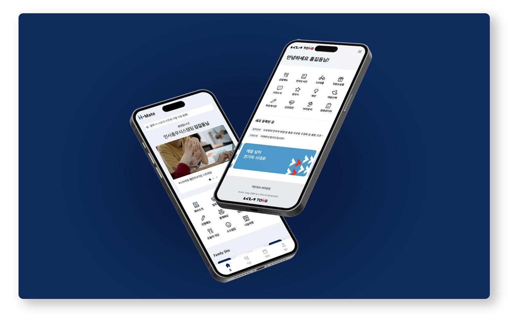

현대오토에버
2024 - 2025
Overview
H-MATE와 기아TONG은 임직원들을 위한 앱으로 2017년 구축 이후 서비스 품질 향상을 위해 서버 및 인프라 교체가 필요한 상황이었습니다. 이를 계기로 서비스 전반의 사용자 경험 개선을 목표로 애플리케이션 리뉴얼이 진행되었습니다.
퍼블리싱 작업 시 다양한 디바이스 환경에서도 일관된 UI를 제공하고, 모바일 환경에 최적화된 인터페이스를 구현하는 데 중점을 두었습니다.
Work Detail
Tech Stack
Tool

iOS / Android 환경 차이 대응
안드로이드와 iOS 간의 렌더링 및 디바이스 환경 차이를 고려하여 플랫폼별 이슈를 대응했습니다.
특히 iOS 기기의 상·하단 노치 영역으로 인해 발생하는 레이아웃 문제를 해결하기 위해 safe-area-inset 값을 활용한 CSS 환경 변수(env, constant)를 적용하여 여백을 동적으로 처리했습니다. 해당 내용은 따로 정리하여 팀원분들에게 공유하는 시간을 가졌습니다.
또한 안드로이드와 iOS 간 차이로 발생하는 다양한 이슈에 대해 개발자와 함께 원인을 분석하고 해결 방안을 도출 및 적용하며 플랫폼에 관계없이 일관된 사용자 경험을 제공할 수 있도록 개선했습니다.
이전 프로젝트
한국통신사업자연합회(KTOA)다음 프로젝트
웹사이트 운영 및 유지보수 경험